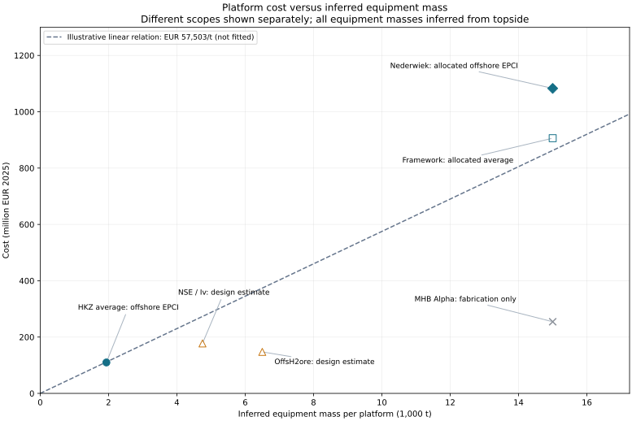

Platform EPCI CAPEX
Calculation and Cost Boundary
This page defines the implemented cost model for one central offshore platform: a commercial engineering, procurement, construction and installation (EPCI) package scaled by the equipment mass it accommodates. The output is total offshore platform EPCI CAPEX on the common EUR2025 basis.
The package includes platform engineering, structural fabrication, yard integration, transport, offshore installation, hook-up and commissioning within the reference contract’s scope. These activities enter the project cost total once, through this package. A separate platform fabrication or installation estimate must not be added to it.
Hosted process and conversion equipment purchase remains with the component owners. Its mass drives platform sizing, but its purchase cost must be excluded from the platform benchmark before comparison. Cables, pipelines and their installation remain separate. Contract-level engineering and delivery allowances already embedded in EPCI must not be added again as project-wide allowances. Other owner costs remain outside this package.
The executable central-platform workflow now books one combined offshore EPCI cost. It accepts direct equipment mass or complete topside mass; it does not add DNV fabrication, yard-integration or platform-installation costs. The benchmark coefficient is an adopted screening judgement, not a fitted law. Previous models remain in the non-published archive and as inactive comparison helpers.
Platform CAPEX can be calculated independently of unresolved OPEX and decommissioning. Complete LCOH remains unavailable until all included cost inputs are supplied. Installation feasibility is reported as not assessed by this mass-cost calculation.
Why Use the Combined Commercial Package?
Commercial awards provide observable prices for delivered packages, but generally do not disclose a consistent split between platform materials, fabrication, integration and offshore installation. A detailed calculation of those components would require independently supported rates, durations, equipment inclusions and commercial allowances. The available evidence does not constrain that decomposition sufficiently.
For this model, fabrication and installation are procured as one delivered offshore EPCI scope. Their separation is unnecessary for the required total if their material cost drivers can be represented together. Our working hypothesis is that equipment mass drives topside size and the associated fabrication, integration and installation effort, making total EPCI approximately proportional to equipment mass over a comparable design range.
This is a modelling hypothesis, not an established scaling law. Fixed mobilisation costs, site conditions and changes in installation method can break proportionality. Combining scopes does not prove that each component scales linearly; the total relationship must be tested against additional commercial references. Until then, an aggregate relationship is more transparent than a detailed breakdown built from poorly constrained assumptions.
Mass Basis and Proposed Relationship
Let \(M_{\mathrm{eqp}}\) be the hosted equipment mass in tonnes. It includes collection and conversion equipment, stacks, BOP, compressors and shared auxiliaries appropriate to the architecture. Collection switchgear remains included even though the model does not require a feeder-bay count. Equipment duties and inclusions must match those of the reference.
The implemented relationship is
\[ \boxed{C_{\mathrm{EPCI}}(M_{\mathrm{eqp}}) =C_{\mathrm{ref}} \left(\frac{M_{\mathrm{eqp}}}{M_{\mathrm{eqp,ref}}}\right)^\beta.} \]
\(C_{\mathrm{ref}}\) is a scope-matched offshore EPCI reference cost in EUR2025; \(M_{\mathrm{eqp,ref}}\) is its equipment mass in tonnes; \(\beta\) is a dimensionless cost-scaling exponent. The default is linear scaling (\(\beta=1\)); recorded scenario overrides may vary the exponent. No fitted coefficient or exponent is claimed. The reference cost is \(C_{\mathrm{ref}}=k_{2025}M_{\mathrm{eqp,ref}}\), so changing \(\beta\) preserves the cost at the reference mass.
Published platform weights commonly describe complete topsides, including structure, rather than equipment alone. If \(f_S\) is the structural fraction of complete topside mass \(M_{\mathrm{top}}\), then
\[ M_{\mathrm{eqp}}=(1-f_S)M_{\mathrm{top}}. \]
Consequently,
\[ C_{\mathrm{EPCI}} =C_{\mathrm{ref}} \left[\frac{(1-f_S)M_{\mathrm{top}}} {(1-f_{S,\mathrm{ref}})M_{\mathrm{top,ref}}}\right]^\beta. \]
With an equal structural fraction in the case and reference, this reduces to scaling by the ratio of complete topside masses. This preserves the link to commercial mass disclosures without treating topside mass as measured equipment mass. DNV’s 50% structural fraction is a provisional conversion assumption, not a supplier weight breakdown (DNV 2023, sec. 3.4). Differences between HVDC and electrolysis structural fractions remain a source of uncertainty.
A separate upstream power-to-mass estimate may be needed where equipment mass is unavailable. Its exponent describes mass scaling with capacity and must not be confused with \(\beta\), which describes cost scaling with mass. No complete hydrogen equipment-mass reference or power-to-mass fit is adopted here.
Commercial Benchmarks and Reproducible Comparison
The evidence separates offshore EPCI awards, allocated framework costs, hydrogen design studies, and fabrication subcontracts. Only observations with comparable scope can calibrate the same cost relation. Published awards are historical contract values, not verified final outturn costs or current supplier quotations.
For a source cost \(C_y\) in currency CU, annual-average exchange rate \(X_y\) in CU/EUR, and annual euro-area HICP change \(\pi_j\), the preliminary normalisation is
\[ C_{2025}=\frac{C_y}{X_y}\prod_{j=y+1}^{2025}(1+\pi_j). \]
For EUR-denominated evidence, \(X_y=1\). Where a price year is not stated, the award or publication year is an explicit assumption. This adjustment does not capture sector-specific escalation, contractual indexation, final settlement or changes in scope.
For each reference, equipment mass and specific costs follow as
\[ M_{\mathrm{eqp}}=(1-f_S)M_{\mathrm{top}},\qquad k=\frac{C_{2025}}{M_{\mathrm{eqp}}},\qquad c_P=\frac{C_{2025}}{10^6P_{\mathrm{GW}}},\qquad m_P=\frac{M_{\mathrm{eqp}}}{10^6P_{\mathrm{GW}}}. \]
Here \(k\) is EUR2025/equipment tonne, \(c_P\) is EUR2025/kW and \(m_P\) is equipment t/kW. The factor \(10^6\) converts GW to kW. These are package-specific ratios, not additional additive cost factors.
Published costs and scope
| Reference | Capacity / count | Published package cost | Price-year basis | Scope and source |
|---|---|---|---|---|
| HKZ Alpha + Beta | 2 × 0.7 GW | 200.0 million USD | 2019 (aggregate announcement; Alpha awarded earlier) | Offshore EPCI; owner-procured HV equipment. (Petrofac 2019; TenneT 2021) |
| Nederwiek 1 | 2 GW | 1,400.0 million USD | 2023 (award) | Petrofac share includes offshore and onshore works; offshore allocation is assumed. (Petrofac 2023b) |
| Petrofac framework | 6 systems | 13,000.0 million EUR | 2023 (announcement) | Both partners, both ends; allocated average is not an independent observation. (Petrofac 2023a, 2025) |
| NSE / Iv concept | 0.5 GW | 161.0 million EUR | 2022 (publication assumed) | Structure including installation, excluding process-equipment purchase. (North Sea Energy 2022, table 4.9 and sec. 4.4.2) |
| OffsH2ore concept | 0.5 GW | 140.9 million EUR | 2023 (publication assumed) | Structure, piping and installation; further engineering allowance separate. (Fraunhofer ISE and project partners 2023, 79) |
| MHB Alpha subcontract | 2 GW | 1,200.0 million MYR | 2023 (award) | Construction engineering, fabrication, mechanical completion, load-out, sea fastening and architectural work; not full EPCI. (Malaysia Marine and Heavy Engineering Holdings Berhad 2023) |
Reconstructed comparison on the common price basis
All costs below are EUR2025. Equipment masses are inferred, not measured. HKZ is a per-platform average of one combined award; the framework uses Alpha’s mass as a representative reference, not six matched project weights.
| Reference | Topside (t) | Inferred equipment (t) | Cost (million EUR2025) | EUR2025/equipment t | Equipment t/kW | EUR2025/kW |
|---|---|---|---|---|---|---|
| HKZ Alpha + Beta (average) | 3,875 | 1,938 | 110 | 56,673 | 0.00277 | 157 |
| Nederwiek 1 (offshore allocation) | 30,000 | 15,000 | 1,083 | 72,195 | 0.00750 | 541 |
| Petrofac framework (allocated average) | 30,000 | 15,000 | 906 | 60,407 | 0.00750 | 453 |
| North Sea Energy / Iv concept | 9,500 | 4,750 | 177 | 37,351 | 0.00950 | 355 |
| OffsH2ore concept | 13,000 | 6,500 | 147 | 22,663 | 0.01300 | 295 |
| MHB Alpha fabrication subcontract | 30,000 | 15,000 | 254 | 16,959 | 0.00750 | 127 |
Mass evidence: HKZ Alpha (Petrofac 2021), HKZ Beta (Petrofac 2022), Nederwiek (MISC Berhad 2025, printed p. 77), Alpha (Malaysia Marine and Heavy Engineering Holdings Berhad 2023), NSE (North Sea Energy 2022, table 4.9), and OffsH2ore (Fraunhofer ISE and project partners 2023, 48). Capacity denominators are the stated platform ratings; they are not necessarily identical electrical input boundaries across technologies.
Currency and price-year audit
Annual-average exchange rates per EUR: USD 1.1195 (2019), USD 1.0813 and MYR 4.9320 (2023) (Deutsche Bundesbank 2026). Euro-area annual HICP changes: 2020: 0.3%; 2021: 2.6%; 2022: 8.4%; 2023: 5.4%; 2024: 2.4%; 2025: 2.1% (Eurostat 2026).
The resulting inflation factors to 2025 are 1.22926 from 2019, 1.10196 from 2022, and 1.04550 from 2023. Source-year conversion precedes inflation adjustment. Consumer inflation is a transparent preliminary proxy, not an offshore fabrication or installation index.
HKZ: divide the combined award and summed topside masses by 2, convert USD to EUR at the assumed aggregate price year, then escalate. Nederwiek: multiply Petrofac’s own award by the assumed offshore share of 80%, convert and escalate. Framework: divide the framework value by 6, multiply by the approximate Petrofac share of 50% and the same offshore share, then escalate. The latter share is user-selected modelling judgement, not a supplier disclosure.

Interpretation and Tradeoffs
The commercial observations support investigating linear scaling. HKZ gives 56,673 EUR2025/equipment t; the individual Nederwiek award, with the assumed offshore allocation, gives 72,195 EUR2025/equipment t. This is a useful cross-check across different masses, but there are only two distinct commercial mass levels. The framework average does not supply a third independent mass level, and its projects need not have equal prices.
Nederwiek’s disclosed Petrofac award is preferable to assigning every project the framework average. Its remaining weakness is the offshore/onshore allocation. HKZ avoids that allocation but differs in technology, site and contract date. The owner-procurement description supports excluding major high-voltage equipment from HKZ’s platform package; detailed auxiliary-equipment boundaries still require reconciliation (TenneT 2021).
The hydrogen estimates remain lower even though installation is included. The difference therefore cannot be explained solely by missing offshore installation. OffsH2ore also carries a separate 20% engineering allowance covering several activities, so its structure subtotal is not a complete commercial EPCI quote (Fraunhofer ISE and project partners 2023, sec. 6.2.8). It would be misleading to apply that whole-plant allowance only to the structural subtotal and call the result scope-matched. Design maturity, equipment boundaries, site, market conditions and commercial risk may explain part of the gap; the evidence does not quantify each contribution. No matched commercial electrolyser-platform EPCI award was identified in this research.
Inferred equipment mass is a major limitation. DNV explicitly equates topside structure mass to process-equipment mass as a rule of thumb, giving \(M_{\mathrm{top}}\approx2M_{\mathrm{eqp}}\) (DNV 2023, 16). The NSE breakdown reports 5510 t structure within 9500 t total topside (North Sea Energy 2022, table 4.9); the remaining mass includes architectural and other items and is not a clean process-equipment measurement. This illustrates why the DNV conversion must not be presented as a measured universal ratio.
Applying the same structural fraction to every observation simply rescales the horizontal axis. It cannot demonstrate that equipment mass predicts cost better than complete topside mass. Actual weight breakdowns are needed to test that hypothesis. Uncertainty in this shared conversion is correlated across the points, not independent scatter that a regression can average away.
The combined package also hides fixed mobilisation costs and changes in lifting method, foundation type and water depth. Those remain applicability checks. An aggregate model is justified by the lack of defensible separate rates, not by proof that every underlying activity scales linearly.
Provisional Conclusion and Further Evidence
Retain \(\beta=b58fc729-690b-4000-b19f-365a4093b2ff;7B7B3C2076617220706C6174666F726D2D657063692D636F73742D7363616C696E672D6578706F6E656E742D76616C7565203E7D7D;\) as the initial hypothesis. A rounded commercial comparison range is 57,503–73,185 EUR2025/equipment t. This is the earlier EUR2023 screening range converted to the site’s price basis; it is not a confidence interval, an exhaustive market range or a validated electrolyser-platform range. The dashed line uses its lower endpoint only to make the mass comparison visible.
The adopted central coefficient is 62,730 EUR2025/equipment t, a modelling judgement within that range, not a fitted estimate. Its source-basis input is platform-epci-unit-cost-source = 60000 EUR/t on the EUR2023 basis; the normalisation above derives the EUR2025 value. Lower and upper screening assumptions remain sensitivity comparisons, not confidence limits. A change to the coefficient must retain its currency year and scope.
The intended mapping remains one equipment-mass input to one offshore EPCI output, with equipment purchase charged elsewhere. A free fitted exponent is not justified yet: it would confound mass with technology, commercial scope and the assumed offshore allocation. Sensitivity to the reference coefficient, mass conversion and allocation is more informative at this stage.
Additional leads remain outside the fit: DolWin beta has a published EPC scope, but its installation boundary needs reconciliation (Aibel 2026); RTE’s Normandy–Oleron package combines offshore platforms and onshore converter stations (RTE 2024b); RTE Dunkerque needs a matched mass and equipment-purchase boundary (RTE 2024a). Oil-and-gas topside EPC packages require similar equipment and foundation boundary checks before transfer. Do not turn partial evidence into an EPCI point by assuming away the missing scope.
For future observations, retain capacity, measured and inferred masses, support structure, depth, installation method, award and price years, currency, equipment inclusions and cost allocation. Do not count parent awards and their subcontracts independently. Keep design studies as a separate comparison class. The highest-value additions are independently scoped offshore EPCI awards at intermediate masses and actual equipment-weight breakdowns.
Why the DNV Structural Model Is Not the Total-Cost Model
The earlier method estimated topside structural mass, jacket mass and pile mass, then multiplied each by a fabrication rate. DNV’s reference rates are 7500 EUR/t, 3400 EUR/t and 1500 EUR/t, respectively (DNV 2023, sec. 3.4). Yard integration and offshore installation would then have been added separately.
The earlier screening comparison placed this structural estimate substantially below the commercial offshore EPCI benchmark. The discrepancy persists after separating Hitachi’s converter scope and assigning only the agreed offshore share of Petrofac’s package. MHB’s broader fabrication subcontract also exceeds the structural estimate. These comparisons show that a structural fabrication calculation cannot stand in for the cost of delivering the platform.
The scopes differ, so this is not evidence that DNV’s steel-cost calculation is intrinsically wrong. It shows that the unmodelled delivery scope is material and cannot be reconstructed reliably from the available separate assumptions. We therefore select commercial EPCI as the total-cost basis. The unexplained difference is not assigned wholly to installation or yard integration, and the DNV subtotal is not added to the commercial estimate.
The full previous equations, inputs and code are preserved outside the published site. They remain useful for physical checks and for revisiting the decomposition if better evidence becomes available.
Executable Interface, Output and Applicability
The model returns one offshore platform EPCI cost, together with its reference scope, mass basis, coefficient, reference mass and scaling exponent. Equipment purchase remains separately accounted for. Platform Installation explains why no separate platform installation cost is added.
Mass scaling does not establish installation feasibility. Large changes in topside size, foundation type, water depth or installation method may require a different reference class rather than smooth extrapolation. Water depth is initially an applicability condition; no unsupported depth correction is embedded in the total EPCI relationship. Transferring an HVDC-derived relationship to electrolysis remains a hypothesis to test.
Supply exactly one of [platform] equipment_mass_t or topside_mass_t, in tonnes. The latter invokes the DNV conversion above; direct equipment mass avoids that conversion for the evaluated case. Platform count is fixed at one. Alternatively, mass_method = "power_scaling" with rated_power_gw requires an adopted upstream reference mass and rating; missing references remain explicit errors. Supplying direct mass and power scaling together is rejected.
The nonlinear reference mass is derived from the MHB Alpha topside reference and the shared structural fraction: \(M_{\mathrm{eqp,ref}}=(1-f_S)M_{\mathrm{top,Alpha}}\). This is a mass normalisation anchor, not adoption of MHB’s fabrication price as EPCI. The coefficient and platform-epci-cost-scaling-exponent can be overridden in recorded sensitivity cases; the central input table remains unchanged.
physical.platform_costs reports the calculation and physical.platform_total_eur reports its total. The ledger contains one platform / epci entry. A separate platform supply or installation entry alongside EPCI is rejected. The calculation requires neither a crane selection nor jacket and pile mass estimates. Any supplied depth is retained as applicability metadata; the workflow does not certify a lift plan.
Annual platform OPEX uses platform-opex-rate on the combined platform EPCI total. This rate remains unresolved and must be calibrated for that cost boundary. Hosted equipment retains its own purchase and OPEX entries.
Decommissioning is separate from EPCI. The old installation-based proxy cannot recover platform removal cost from the combined package. platform-decommissioning-cost is therefore a separate, initially unresolved EUR2025 input. It enters lifetime costs once and does not reduce or block the calculated platform CAPEX. Missing decommissioning blocks complete LCOH. The existing installation-based proxy still applies to separately costed non-platform installation see financial treatment.
Remaining evidence work: expand the commercial sample, obtain measured equipment masses, reconcile auxiliary-equipment scope, and provide scenario mass, platform OPEX and decommissioning inputs. These gaps do not justify inventing a mass or reporting an incomplete lifetime cost as complete.